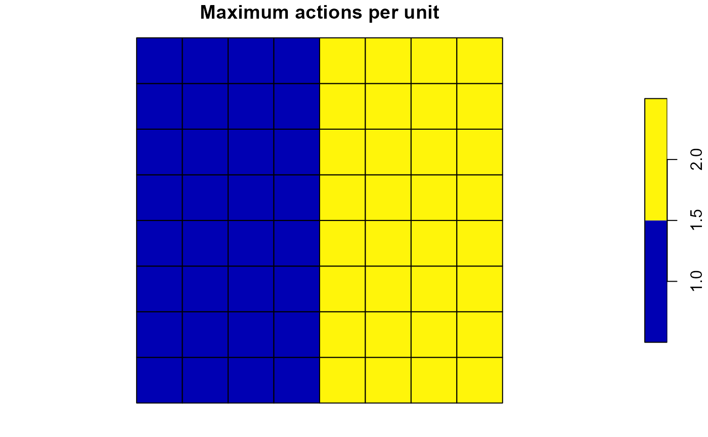

Constrain the number of actions selected per planning unit
Source:R/add_constraint_action_cardinality.R
add_constraint_action_cardinality.RdSet a minimum, maximum, or exact number of management actions that can be selected in each planning unit. Rules can apply to all units, selected units, all actions, or a specified subset of actions.
Arguments
- x
A
Problemobject with actions registered usingadd_actions().- count
A single finite, non-negative integer giving the number of selected individual actions per planning unit.
- sense
One of
"min","max", or"equal".- actions
Optional subset of action identifiers or existing
actions$action_setclassification labels.NULL(default) counts all actions. Identifiers registered throughadd_action_sets()cannot be counted directly; use their individual member actions.- pu
Optional vector of planning-unit identifiers.
NULL(default) applies the rule separately to all planning units.- name
Optional name for the constraint. A unique name is generated when
NULL.
Value
An updated Problem with an additional rule in
x$data$constraints$action_cardinality. The input problem is
preserved; no optimisation is performed.
Details
How action cardinality works
A cardinality constraint limits the number of individual actions selected
within each planning unit. For example, count = 2 and
sense = "max" allow zero, one, or two actions per unit, whereas
sense = "equal" requires exactly two. The available senses are:
"max": select at mostcountactions."min": select at leastcountactions."equal": select exactlycountactions.
The limit is evaluated separately for every unit covered by pu;
it is not a total number of actions across the study area.
Default and overlapping rules
By default, at most one action can be selected per planning unit. To allow
concurrent actions, specify a total maximum or exact-count rule with
actions = NULL. That rule replaces the default one-action limit only
in the planning units it covers. A minimum rule or a rule restricted to
an action subset does not remove the default limit.
For example, to require at least two actions in a unit, first allow at least two with a total maximum, then add the minimum. Rules from different calls are enforced together; later rules do not overwrite earlier ones. Conflicting rules can make the problem infeasible.
Restricting the scope
Supply pu to restrict a rule to particular planning units and
actions to count only specified actions. For example, a minimum
of one action from c("restore", "control") requires at least one
of those actions in every covered unit. Actions excluded by the subset
are not counted towards that particular rule.
Cardinality counts individual selected actions, not the action sets
registered with add_action_sets(). Registered sets describe joint
effects when their member actions are selected; they are not additional
selectable actions.
Feasibility and stored rules
Only available planning-unit/action pairs can be selected. A positive
minimum or exact count larger than the number of available actions in a
covered unit is rejected. Conflicts with other constraints may still be
detected only when the problem is solved. Explicit rules are stored in
x$data$constraints$action_cardinality and do not themselves
select actions or run an optimisation solver.
Examples
# EXAMPLE 1: Define the available decisions
# Consider three planning units, each with four possible actions.
# By default, the model allows at most one action in each unit.
# Registering actions does not select any of them.
problem <- create_problem(
pu = data.frame(id = c(10L, 20L, 30L), cost = 1),
features = data.frame(id = 1L, name = "woodland"),
dist_features = data.frame(
pu = c(10L, 20L, 30L), feature = 1L, amount = 10
)
) |>
add_actions(
data.frame(id = c("restore", "control", "fence", "monitor")),
cost = 1
)
# EXAMPLE 2: Different capacities in different planning units
# Allow up to three actions in unit 10 and up to two in unit 20.
# Unit 30 retains the default maximum of one action.
# A maximum permits fewer actions, including no intervention.
capacities <- problem |>
add_constraint_action_cardinality(
count = 3, sense = "max", pu = 10L, name = "capacity_10"
) |>
add_constraint_action_cardinality(
count = 2, sense = "max", pu = 20L, name = "capacity_20"
)
# Inspect the registered constraints, not solved decisions.
capacities$data$constraints$action_cardinality[
, c("name", "count", "sense")
]
#> name count sense
#> 1 capacity_10 3 max
#> 2 capacity_20 2 max
# EXAMPLE 3: Require at least one action from a subset
# In units 10 and 20, require restoration or control (or both).
# The minimum applies separately to each unit, and only these
# two actions count towards the requirement. The previously
# defined total capacities remain in force.
required <- capacities |>
add_constraint_action_cardinality(
count = 1, sense = "min",
actions = c("restore", "control"),
pu = c(10L, 20L), name = "management_required"
)
# EXAMPLE 4: Require an exact count or prohibit interventions
# An exact count of two overrides the default one-action maximum
# in unit 10 and requires two distinct actions to be selected.
exact <- add_constraint_action_cardinality(
problem, count = 2, sense = "equal", pu = 10L
)
# A zero maximum prohibits all actions in unit 30.
# It does not exclude that unit from the planning region.
no_action <- add_constraint_action_cardinality(
problem, count = 0, sense = "max", pu = 30L
)
# EXAMPLE 5: Map where a more flexible capacity is allowed
# Use the bundled 64-unit landscape to impose a hypothetical
# policy allowing two concurrent actions in the eastern half.
# All other planning units retain the default maximum of one.
# No solver is needed to visualise the scope of the rule.
if (requireNamespace("sf", quietly = TRUE)) {
sim <- load_sim_multiaction()
spatial_problem <- create_problem(
pu = sim$planning_units,
features = sim$features,
dist_features = sim$dist_features,
cost = "cost"
) |>
add_actions(sim$actions, cost = sim$action_costs)
# Identify the eastern units using the x-coordinate of their
# polygon centroids. The two-action limit is an upper bound,
# not a requirement to select two actions.
centres <- sf::st_coordinates(
sf::st_centroid(sf::st_geometry(sim$planning_units))
)
east <- centres[, 1] > stats::median(centres[, 1])
eastern_ids <- sim$planning_units$id[east]
spatial_problem <- add_constraint_action_cardinality(
spatial_problem, count = 2, sense = "max", pu = eastern_ids
)
# Display the geographical limits, not selected actions.
capacity_map <- sim$planning_units
capacity_map$max_actions <- ifelse(east, 2L, 1L)
plot(capacity_map["max_actions"], main = "Maximum actions per unit")
}
